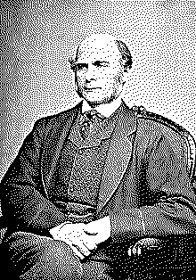

| годы жизни | 1822–1911 |
| страна | Англия |
| область | статистика · антропометрия · метеорология |
| главное | регрессия к среднему · корреляция · доска-квинканкс |
| характер | измерял всё подряд · кузен Дарвина · основатель евгеники |
Он открыл регрессию к среднему — и основал евгенику.
одна и та же страсть к измерению дала и метод, и его злоупотребление.
Фрэнсис Гальтон мерил всё: рост, силу пожатия, остроту зрения, красоту женщин в разных городах, даже скуку на лекциях. Кузен Дарвина, он захотел приложить наследственность к человеку числом — и по дороге наткнулся на два понятия, без которых немыслима нынешняя статистика.
Первое — регрессия к среднему1. У высоких отцов сыновья в среднем ниже отцов, у низких — выше. Не порода выравнивается, а случай: крайнее значение редко повторяется, потому что за ним стояла и удача, а она не наследуется. Гальтон сперва принял это за биологический закон, а увидел закон самой случайности.
«Всякий раз, когда можешь, — считай.» — Фрэнсис Гальтон
Второе — корреляция2. Мера того, насколько две величины ходят вместе: рост и размах рук, отец и сын. Число от минус единицы до единицы, которое позже его ученик Пирсон отольёт в формулу. А чтобы показать, как из случайных толчков рождается колокол, Гальтон построил доску-квинканкс: шарики, сыплясь через ряды гвоздиков, сами укладываются в нормальную кривую.
И та же страсть завела его в тупик. Гальтон придумал слово «евгеника» и всю жизнь доказывал, что человека надо разводить, как скот. Инструменты он дал великие; выводы из них сделал бесчеловечные. На null он стоит с этой тенью не спрятанной: метод и его злоупотребление вышли из одной руки, и честнее это помнить.